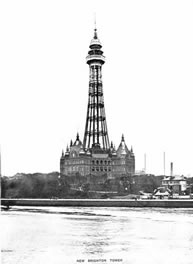

A personal view of growing up in New Brighton. A great site detailing information about the main elements of New Brighton's history and historic buildings and features. From The New Brighton Tower to The Open Air Pool.
30 years of Community Action.
Merseyside Books is an online bookstore specialising in local publications about the Wirral and Liverpool. This site features a great section on the history of New Brighton with a wide selection of images and in depth information. The NEW BRIGHTON SEASIDE GALLERY, which shows past and present photographs of the area, together with detailed historical information about the formation, growth, decline and renovation of New Brighton in the Wirral, from the 1830s through to the present day.
In its' heyday New Brighton featured many attractions for visitors, including The famous New Brighton Tower, The Ham and Egg Parade, The Tower Ballroom and Theatre, The ferry Pier, The Tram Terminus and Horse-Shoe at the bottom of Victoria Road, The New Brighton Palace with it's concert room, skating rink, dancing saloon, aquarium, greenhouses & theatre, the New Brighton Lighthouse & Perch Rock, as well as two swimming pools and many other amusements for the family.
A great selection of images and postcards detailing New Brighton and surrounding areas in times past. This images can be reproduced at the centre on photo glossy paper for just £1.50.
Do you have a site to recommend or do you have any images you would like to donate to the website? We are looking for people to tell us stories about growing up in New Brighton, reflections of the past and how they feel about the future of the town. Please email newbrightononline@gmail.com for more information.